Trip guides for India
When to go, how to get there, local rules and what to pack

Trip guide · Best: 23 March 2027
Holi 2027: date, where to celebrate, and what to wear and pack
Holi 2027 is on Tuesday 23 March, with Holika Dahan on Monday 22 March (central government holiday list). The best places to celebrate Holi in India, Lathmar Holi in Barsana and the Braj schedule (2027 dates to be announced; the 2026 programme from UP Tourism), Holi in Varanasi, Rajasthan and Goa's Shigmo, the Holi long weekend, what to wear, what to pack, skin and hair care, and safety tips.
Plan your trip
Trip guide · Best: February
Where to go in February: places to visit in India and abroad
The best places to visit in February 2027, in India and outside India: snow in Gulmarg, Auli and Manali, the driest month in the Andaman, Goa Carnival, the Jaisalmer Desert Festival on 18–20 February, Kerala, Hampi and Pondicherry in the south, tiger safaris, and abroad Thailand, Vietnam, Dubai, Singapore, Malaysia, Sri Lanka, the Maldives, Bali, Japan and Europe, with February's long weekends and honeymoon ideas.
Plan your trip
Trip guide · Best: March
Where to go in March: places to visit in India and abroad
The best places to visit in March 2027, in India and outside India: Holi on 23 March in Mathura, Vrindavan and Varanasi, the last snow in Gulmarg and Auli, hill stations opening up, the Andaman's calm sea, Goa's Shigmo, the International Yoga Festival in Rishikesh, and abroad Vietnam, Sri Lanka, the Maldives, Singapore, Japan's cherry blossom, Dubai and Egypt, with March's long weekends, including the 9-day Holi and Good Friday break.
Plan your tripTrip guide · Best: 31 Dec 2026 – 3 Jan 2027
Where to go for New Year 2027: the best New Year trips in India and abroad
New Year trip ideas for 2027: Goa, Kerala, Andaman, Udaipur, Jaipur, Rishikesh, Coorg, Meghalaya, Manali, Shimla and Kashmir in India, and Dubai, Thailand, Bali, Singapore, Vietnam, Sri Lanka, the Maldives and Malaysia abroad. Weather, New Year's Eve events, visas and when to book.
Plan your trip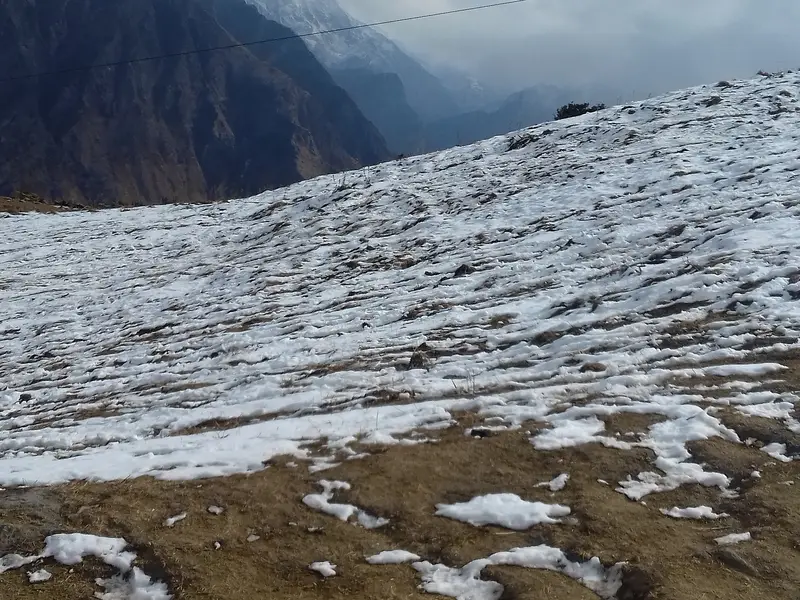
Trip guide · Best: Jan–Mar for snow and skiing; late Dec if you're lucky
Auli in December: snow, skiing, weather and what to wear
Plan Auli for December or December end: will there be snow, when GMVN's ski courses start, IMD temperatures for Joshimath, the closed ropeway and the road up, a 3-day plan with Gorson Bugyal, getting there from Delhi and Rishikesh, and what to wear.
Plan your trip
Trip guide · Best: Go for green rice fields and Galungan; pick April to October for dry weather
Bali in January: rain, weather, Galungan and is it worth going
Plan Bali for January 2027: BMKG averages for January (Bali's wettest month), whether January is a good time to go, Galungan on 13 January and Kuningan on 23 January, the Isra Mikraj holiday, rough seas to Nusa Penida, beach rubbish at Kuta, flights from India and the arrival steps.
Plan your trip
Trip guide · Best: January is Dubai's coolest month, good for the desert and the beach
Dubai in January: weather, the Shopping Festival and events
Plan Dubai for January 2027: National Center of Meteorology averages for January (Dubai's coolest month), the Dubai Shopping Festival to 17 January with its nightly drone shows, Market Outside The Box, the Dubai Marathon on 17 January, the Desert Classic golf, WHX, Global Village and Miracle Garden, morning fog at the airport, Ramadan from about 8 February, and the visa for Indians.
Plan your tripTrip guide · Best: January is warm, dry and quieter after New Year
Goa in January: weather, festivals and a quieter beach month
Plan Goa for January 2027: IMD January averages, how Goa changes after New Year, the Feast of the Three Kings on 6 January, the Goa Food and Cultural Festival, Carnival dates, turtle nesting beaches, the Republic Day long weekend, airports and beach safety.
Plan your trip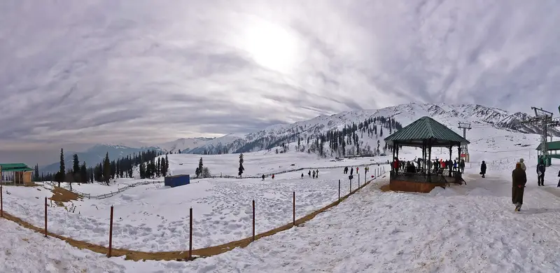
Trip guide · Best: January to March for skiing
Gulmarg in January: snow, skiing and the gondola
Plan Gulmarg for January 2027: IMD January averages and how much snow a January can bring, the first week versus the last week, IISM's January ski courses, the Gulmarg Gondola in deep snow, the Tangmarg road, Republic Day, a 3-day plan and what to wear.
Plan your trip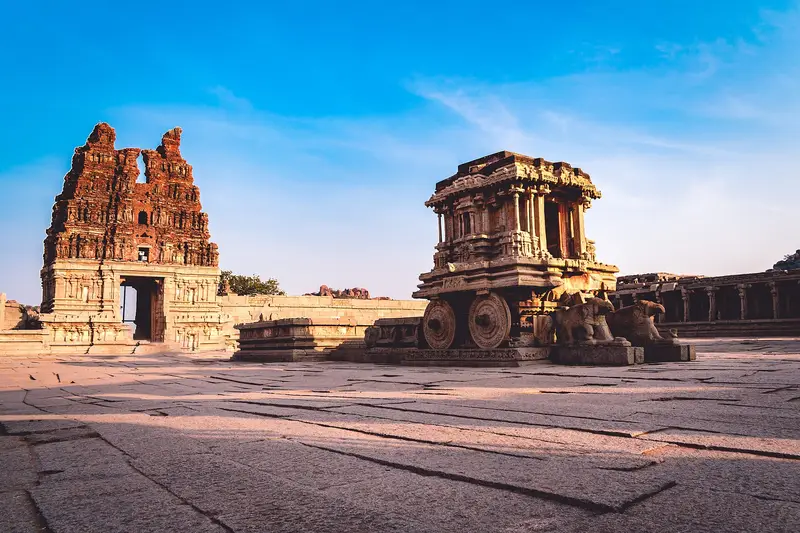
Trip guide · Best: Oct–Feb, says Karnataka Tourism
Hampi in December: weather, monuments, a 2-day plan and what to wear
Plan Hampi for December or December end: IMD temperatures, the monument hours and where to buy the ASI ticket, the Virupaksha temple timings, a simple 2-day plan with the stone chariot, Hemakuta and Matanga hills, getting there from Bengaluru by the overnight train or a flight, and what to wear.
Plan your trip
Trip guide · Best: Mid-Nov–Jun, when all zones are open; Dec–Feb are cold
Jim Corbett in December: open safari zones, booking, weather and what to wear
Plan a Jim Corbett safari in December or December end: which zones are open (Dhikala, Bijrani, Jhirna, Dhela and more), how to book the permit on the official site, safari rules, IMD temperatures, a 2-day plan, getting there from Delhi to Ramnagar, and what to wear on a cold open-jeep safari.
Plan your trip
Trip guide · Best: January for deep snow; keep spare days
Kashmir in January: snow, Chillai Kalan, roads and flights
Plan Srinagar, Pahalgam, Sonamarg and Gulmarg for January 2027: IMD January averages, the end of Chillai Kalan, how January 2026 went (frozen Dal Lake, snow days that shut flights and the highway), the Vande Bharat train in snow, which roads close, Republic Day, and what to wear.
Plan your trip
Trip guide · Best: January is one of Kerala's driest, most pleasant months
Kerala in January: weather, festivals and Munnar's cold mornings
Plan Kerala for January 2027: IMD January averages and records for Kochi, Thiruvananthapuram, Alappuzha, Kottayam and Kozhikode, frost in Munnar's tea valleys, Sabarimala Makaravilakku on 14 January and the pilgrim rush, the Kerala Literature Festival on 21–24 January, the Arthunkal feast, Thaipooyam, houseboats, the Republic Day long weekend and a one-week route.
Plan your trip
Trip guide · Best: Mid-January to February for snow
Manali in January: snow, weather, the Winter Carnival and roads
Plan Manali for January 2027: IMD averages for January, how snow came late in January 2026, the first, middle and last week of the month, the Winter Carnival, ski courses at Solang, the Atal Tunnel and Sissu in snow, Lohri and the Republic Day long weekend.
Plan your trip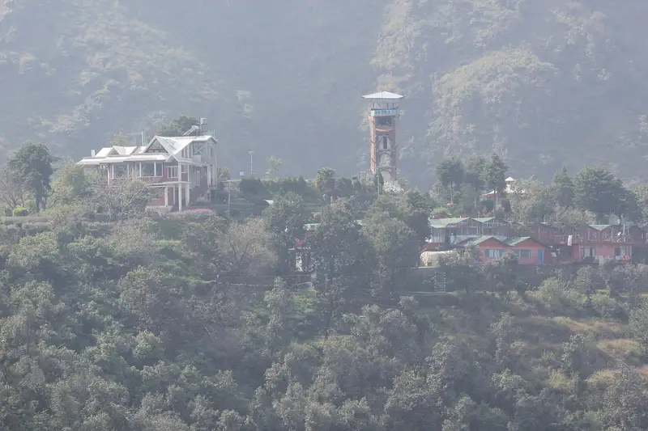
Trip guide · Best: Mar–Jun and Sep–Nov; Dec–Jan are cold and clear
Mussoorie in December: weather, snow, the Winterline and what to wear
Plan Mussoorie for December or December end: IMD temperatures, the real chances of snow, the Winterline sunsets, a 2-day and 3-day plan with Mall Road, Gun Hill, Landour, George Everest's house and Dhanaulti, getting there from Delhi and Dehradun, New Year traffic, and what to wear.
Plan your trip
Trip guide · Best: Mar–Jun and Sep–Nov; Dec–Jan are cold and clear
Nainital in December: weather, snow, a 2–3 day plan and what to wear
Plan Nainital for December or December end: IMD temperatures, the real chances of snow, a 2-day and 3-day plan with Naini Lake, Snow View, Tiffin Top, Bhimtal and Mukteshwar, getting there from Delhi via Kathgodam, Christmas and New Year traffic, and what to wear.
Plan your trip
Trip guide · Best: Jan–Feb are driest; Dec can bring heavy rain
Pondicherry in December: weather, rain, a 3-day plan and what to wear
Plan Pondicherry (Puducherry) for December or December end: IMD temperatures and rain (December is the wettest month of the winter), cyclone warnings, the French Quarter, the Promenade, Sri Aurobindo Ashram hours, how to visit the Matrimandir at Auroville, Paradise Beach, Christmas and New Year, getting there from Chennai and Bengaluru, and what to wear.
Plan your trip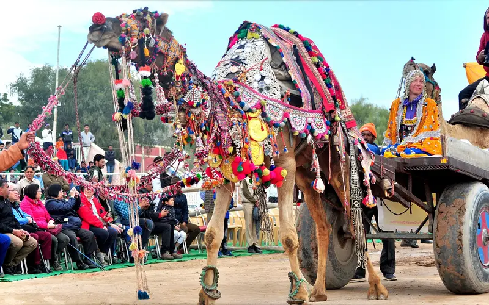
Trip guide · Best: January: sunny days, cold nights, big festivals
Rajasthan in January: weather, festivals and where to go
Plan Rajasthan for January 2027: IMD January averages for Jaipur, Udaipur, Jaisalmer and Bikaner, the Bikaner Camel Festival on 9–10 January, the Kite Festival in Jaipur on 14 January, the Jaipur Literature Festival, Republic Day, fog on trains, a one-week route and what to wear.
Plan your trip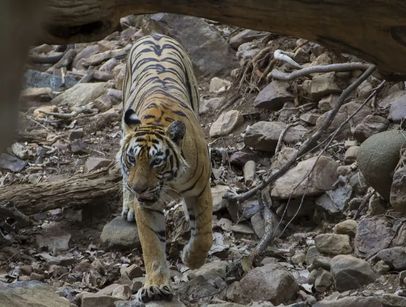
Trip guide · Best: Oct–Jun, when the park is open; Dec–Jan are cold
Ranthambore in December: safari booking, zones, timings and what to wear
Plan a Ranthambore safari in December or December end: how to book on the official website the Forest Department links to, when booking opens, Tatkal and current booking, the 10 zones, winter safari timings, ID and refund rules, IMD temperatures, a 2-day plan with the fort and Trinetra Ganesh temple, getting there from Jaipur and Delhi, and what to wear.
Plan your trip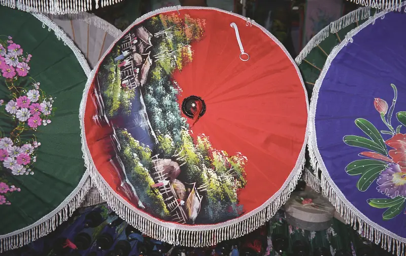
Trip guide · Best: January is one of the driest, coolest months; the Andaman coast is at its best
Thailand in January: weather by region, where to go and festivals
Plan Thailand for January 2027: Thai Meteorological Department averages for Bangkok, Chiang Mai, Phuket, Pattaya and Ko Samui, which coast is drier, the Bo Sang Umbrella Festival, Children's Day, the Similan Islands season, cool nights in the north, the Republic Day long weekend and the entry rules for Indians.
Plan your trip
Trip guide · Best: January is dry and sunny in the south, cool and grey in the north
Vietnam in January: weather by region, Tet 2027 and where to go
Plan Vietnam for January 2027: weather averages for Hanoi, Sa Pa, Ha Long, Hue, Da Nang and Hoi An, Ho Chi Minh City and Phu Quoc, Tet on 6 February 2027 and the official 4 to 10 February break, the train rush from 23 January, Ha Long cruises in winter, a north-to-south route and the e-visa for Indians.
Plan your trip
Trip guide · Best: Oct–Mar; Dec–Jan are cool and dry
Coorg in December and January: weather, a 2–3 day plan and what to wear
Plan Coorg (Kodagu) for December or December end: IMD temperatures, misty mornings but no snow, a 2-day and 3-day plan with Abbey Falls, Raja's Seat, Dubare and the Golden Temple, the trip from Bangalore, and what to wear.
Plan your tripTrip guide · Best: 31 Dec 2026
Dubai New Year's Eve 2027: Burj Khalifa fireworks, where to watch for free, and getting home
Plan New Year's Eve 2027 in Dubai: what Emaar has announced for the Burj Khalifa fireworks, the free viewing areas in Downtown Dubai, other fireworks spots, last year's metro hours and road closures, visas for Indians and tips for the night.
Plan your trip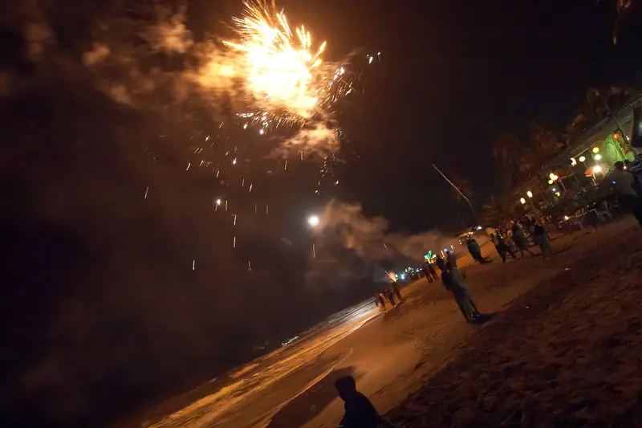
Trip guide · Best: 31 Dec 2026
Goa New Year 2027: parties, beaches, rules and how to plan the night
Planning New Year's Eve 2027 in Goa? What's announced so far, North or South Goa, the midnight music rule, last year's traffic plan, beach fines, safety, getting there and where to stay.
Plan your trip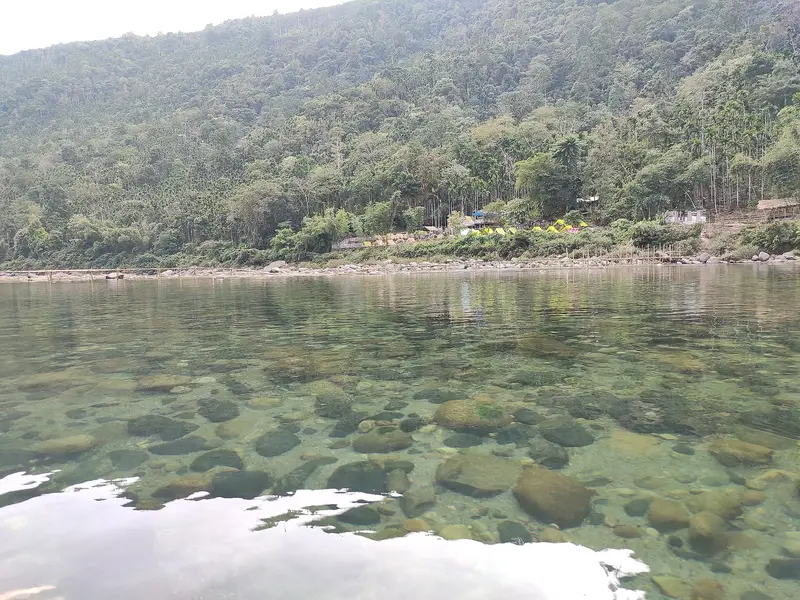
Trip guide · Best: Oct–Apr; Dec–Jan are dry and clear, with cold nights
Meghalaya in December and January: weather, itinerary and what to wear
Plan Meghalaya for December or December end: IMD temperatures for Shillong and Cherrapunji, the truth about snowfall, a 4-day and 5-day itinerary with Sohra, Dawki and Mawlynnong, Christmas in Shillong, guest registration, getting there from Guwahati and what to wear.
Plan your trip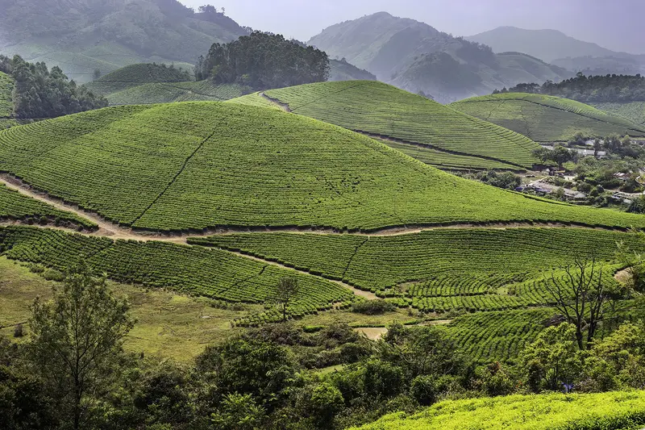
Trip guide · Best: Sep–Mar; Dec–Jan have the coldest nights
Munnar in December and January: weather, frost and a 2–3 day plan
Plan Munnar for December or December end: how cold it gets, why you may see frost but not snow, a 2-day and 3-day plan, Eravikulam National Park tickets, the road from Kochi, the plastic rules and what to wear.
Plan your trip
Trip guide · Best: Oct–Dec for clear views; January is the coldest
Nepal in December and January: weather, snow, trekking and a trip plan
Plan Nepal for December or January from India: temperatures in Kathmandu, Pokhara, Nagarkot and Chitwan, where it snows, festivals from Yomari Punhi to Maghe Sankranti, a 6-day plan, the Everest mountain flight, winter trekking rules, flights and border crossings, documents and what to wear.
Plan your trip
Trip guide · Best: Oct–Dec for clear skies; Dec–Feb is winter
Bhutan in December and January: weather, snow, festivals and a trip plan
Plan Bhutan for December or January from India: temperatures in Paro, Thimphu and Punakha, the chances of snow, the Dochula festival on 13 December, National Day, black-necked cranes, a 6-day plan, flights and the road via Phuentsholing, SDF and what to wear.
Plan your trip
Trip guide · Best: Oct–Jun; Dec–Jan are the coldest
Ooty in December and January: weather, a 2–3 day trip plan and what to wear
Plan Ooty for December or January: IMD temperatures, why you'll see frost but not snow, a 2-day and 3-day trip plan, the trip from Bangalore by car, bus or train, the toy train, the e-pass and plastic ban, and what to wear.
Plan your trip
Trip guide · Best: Oct–Mar; Dec–Jan are the coldest
Varanasi in December and January: weather, a 2–3 day trip plan and what to wear
Plan Varanasi for December or January: IMD temperatures, winter fog and train delays, a 2-day and 3-day trip plan, Ganga aarti and Kashi Vishwanath timings, New Year crowds, the new ropeway, Sarnath, getting there and what to wear.
Plan your trip
Trip guide · Best: Dec–Apr; Feb–Apr are the driest
Andaman in December and January: weather, ferries and what to pack
Plan an Andaman trip for December or January: Port Blair weather and rain, ferries to Havelock (Swaraj Dweep) and Neil (Shaheed Dweep), Jolly Buoy, permits, beach and coral rules, the Island Tourism Festival and what to wear.
Plan your trip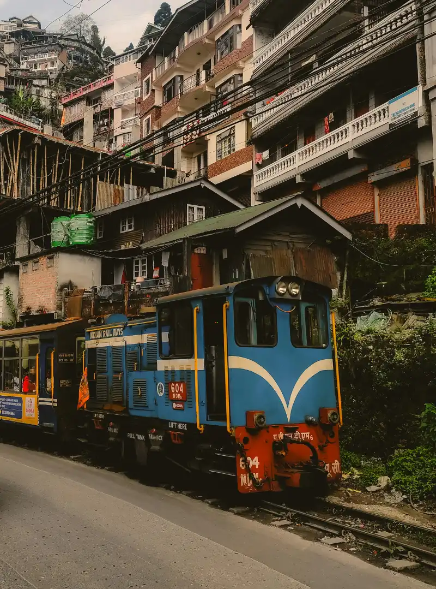
Trip guide · Best: Oct–Dec for clear views; Jan is the coldest
Darjeeling in December and January: weather, snow and what to wear
Plan Darjeeling for December or January: IMD temperatures, the real chances of snowfall, Tiger Hill sunrise and its vehicle pass, toy train joy rides, Sandakphu snow, getting there from Bagdogra and NJP, and what to wear.
Plan your tripTrip guide · Best: Dec–Feb; snow likelier in Jan–Feb
Shimla in December and January: snow, weather and what to wear
Plan Shimla for December or January: IMD temperatures, when snow usually comes, the Kalka–Shimla toy train, Kufri and Narkanda, the ice rink and winter carnival, snow roads, and what to wear.
Plan your trip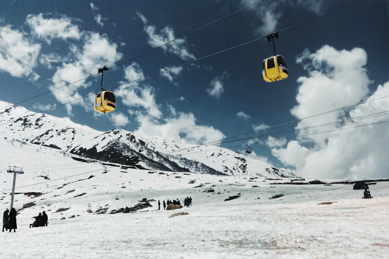
Trip guide · Best: Dec–Feb for snow
Kashmir in December: weather, snow and what to wear
Plan Srinagar, Gulmarg, Pahalgam and Sonamarg for December: IMD temperatures, when snow comes, Chillai Kalan, the Gulmarg Gondola, trains and roads in winter, phone SIMs, and what to wear and pack.
Plan your trip
Trip guide · Best: November to February for most of India
Honeymoon destinations in India: the best places by month, from November to February
The best honeymoon places in India for the wedding season: Goa, Kerala, Munnar, Andaman, Udaipur, Jaipur, Kashmir and Gulmarg, Manali, Shimla, Coorg, Ooty, Darjeeling, Meghalaya and Rishikesh, sorted by month (November, December, January, February) and by style (beach, snow, heritage, nature), with the weather, the nearest airport and links to our full trip guides.
Plan your trip
Trip guide · Best: Depends on the country: see the table
Honeymoon destinations outside India: the best trips abroad for Indian couples
The best international honeymoon destinations from India for the wedding season: the Maldives, Bali, Thailand, Mauritius, the Seychelles, Sri Lanka, Dubai, Singapore, Malaysia, Vietnam, Turkey, Europe, Bhutan and Nepal, sorted by month (November to February), by visa ease for Indians, by flight time from Delhi and Mumbai, and by style, with links to our full trip guides.
Plan your trip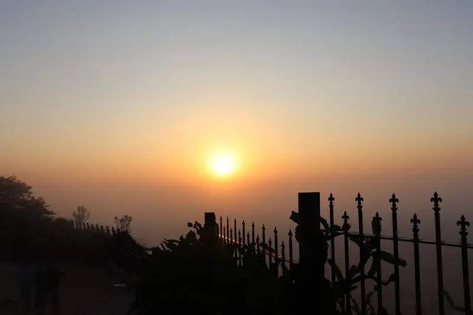
Trip guide · Best: October to March for most; hill towns all year
Weekend getaways from Bangalore: 11 trips for 2 or 3 days
Weekend getaways from Bangalore (Bengaluru), with the distance and travel time by road, train or flight: Nandi Hills, Mysuru, Coorg, Chikkamagaluru, Ooty, Wayanad, Puducherry, Hampi, Gokarna, Munnar and Kerala, and Goa. Trips within 100, 200 and 300 km, best months, December trips, forest-road night closures and the 2027 long weekends.
Plan your tripTrip guide · Best: October to March for most; hills from March to June too
Weekend getaways from Delhi: 12 trips for 2 or 3 days
Weekend getaways from Delhi, with the distance and travel time by road, train or flight: Agra, Mathura and Vrindavan, Jaipur, Rishikesh, Mussoorie, Nainital, Shimla, Amritsar, Manali, Udaipur, Varanasi and Kashmir. Best months, what to do, trips within 200 km, mountains or not, December trips and the 2027 long weekends that suit each one.
Plan your trip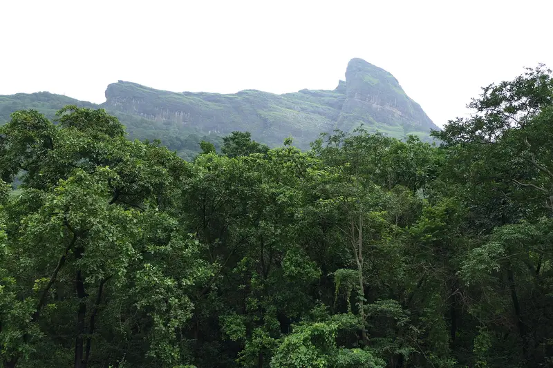
Trip guide · Best: October to March for most; June to September for monsoon hills
Weekend getaways from Mumbai: 11 trips for 2 or 3 days
Weekend getaways from Mumbai, with the distance and travel time by road, train, ferry or flight: Matheran, Lonavala, Alibaug, Igatpuri, Nashik, Daman, Mahabaleshwar, Ajanta and Ellora, Goa, Udaipur and Jaipur. Official distances from Maharashtra Tourism, best months, monsoon trips, trips for couples and families, December trips and the 2027 long weekends.
Plan your trip
Trip guide · Best: Depends on the country: see the table
International trips from India: where to go, by flight time, season and visa
Choosing a foreign trip from India? Compare Nepal, Bhutan, Sri Lanka, the Maldives, Dubai, Thailand, Vietnam, Malaysia, Hong Kong, South Korea, the Philippines, Cambodia, Singapore, Egypt, Kenya, the Seychelles, Mauritius, Russia, Oman, Uzbekistan, Bali, Japan, Europe, the UK, Australia, Canada, the USA and New Zealand by distance and rough flying time from Delhi and Mumbai, the best months, the visa type for Indians, and whether each suits a honeymoon or a family trip. Links to our trip guides, packing lists and baggage rules.
Plan your trip
Trip guide · Best: Nov–Feb
Goa for Christmas and New Year: a simple trip guide
Plan Goa for December and January: the weather, Dabolim or Mopa airport, trains, taxis and scooters, beach rules and fines, New Year crowds and tips for foreign visitors.
Plan your trip
Trip guide · Best: Dec–Jan
Where to go in India in December and January
Beach, snow, forts or backwaters? Compare Goa, Andaman, Manali, Shimla, Rishikesh, Darjeeling, Bhutan, Nepal, Singapore, Dubai, Sri Lanka, Thailand, Vietnam, Ooty, Varanasi, Jaipur, Udaipur, Jaisalmer, the Rann of Kutch, Gulmarg and Kerala for a Christmas or New Year trip: weather, how to get there, crowds and what to pack.
Plan your tripTrip guide · Best: May to September for Moscow and St Petersburg, with the white nights in June; December to February for snow, when Moscow is about −4 to −6 °C by day and −9 to −12 °C at night
Russia trip from India: the e-visa for Indians, direct flights to Moscow, a 7-day plan and the best time to go
Plan a Russia trip from India: the unified e-visa for Indians from the Russian Foreign Ministry's portal (one trip of up to 16 days within 60 days, no invitation or voucher), the regular tourist visa and its fee from the Russian Embassy in India, direct Aeroflot flights from Delhi to Moscow, a 7-day Moscow and St Petersburg plan, snow, white nights and the weather by month, and food tips for vegetarians.
Plan your trip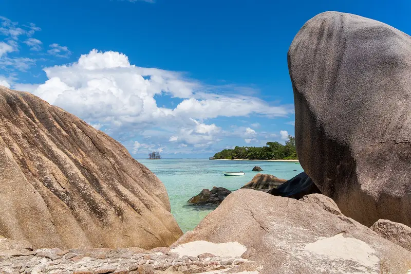
Trip guide · Best: Warm all year, about 28 to 32 °C by day; June to September has the least rain in Victoria, and December and January the most
Seychelles trip from India: no visa, the Travel Authorisation, direct flights, a 7-day island plan and the best time to go
Plan a Seychelles trip or honeymoon from India: no visa for Indians, a free visitor's permit on arrival for up to 3 months, the paid Travel Authorisation you must get online first (standard 24 hours, premium 6 hours), the documents to carry, direct IndiGo flights from Mumbai to Mahé, a 7-day Mahé, Praslin and La Digue plan, the Seychelles Meteorological Authority's rain and temperature averages, and food tips for vegetarians.
Plan your trip
Trip guide · Best: November to February, the dry and slightly cooler months; March to May is very hot, and the rains are heaviest from June to October
Cambodia trip from India: the e-visa, Angkor Wat tickets, flights, a 6-day plan and the best time to go
Plan a Cambodia trip from India: the Cambodia e-visa for Indians on the official site (US$30, single entry, 1 month's stay, 3 business days), the e-Arrival form, Angkor Pass prices from the official Angkor Enterprise site, direct flights from Delhi to Phnom Penh, a 6-day Siem Reap and Phnom Penh plan, the weather by month, veg food tips and the Indian Embassy's job-scam warning.
Plan your trip
Trip guide · Best: June to September for Banff, the Rockies and Vancouver; late September and October for autumn colours in Ontario and Quebec; December to March is cold and snowy, good for skiing
Canada trip from India: the visitor visa, direct flights, a 10-day plan and the best time to go
Plan a Canada trip from India: the Canadian visitor visa for Indians (CAN$100 plus CAN$85 for biometrics), how to apply online, where to give biometrics in India, how to check the processing time, why Indians can't use the eTA even with a US visa, direct flights from Delhi to Toronto and Vancouver, a 10-day Toronto, Niagara Falls, Banff and Vancouver plan, and the weather by month.
Plan your tripTrip guide · Best: Late June to October is the long dry season and the usual time of the wildebeest migration in the Masai Mara; January and February are also dry; April and May are the long rains
Kenya safari from India: the eTA, direct flights, a 7-day Masai Mara plan and the best time to go
Plan a Kenya safari from India: the Kenya eTA for Indians (from US$30, usually within 3 working days) on the official site, the documents you need, direct flights from Mumbai to Nairobi, a 7-day Nairobi, Masai Mara, Lake Nakuru and Amboseli plan, Kenya Wildlife Service park fees, the dry and rainy seasons by month, and the yellow fever card rule for coming home to India.
Plan your trip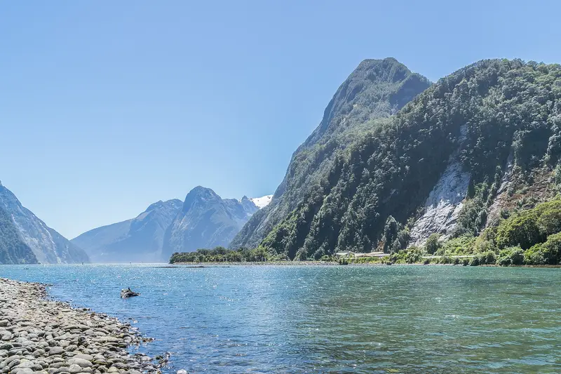
Trip guide · Best: December to March for summer, long days and lakes; March to May and October and November are quieter; June to August is ski season in Queenstown
New Zealand trip from India: the visitor visa, flights, a 10-day plan and the best time to go
Plan a New Zealand trip from India: the New Zealand Visitor Visa for Indians (from NZD 441), why Indians can't use the NZeTA, the money and documents you need, one-stop flights via Singapore, Kuala Lumpur, Hong Kong or Australia, a 10-day Auckland, Rotorua, Queenstown, Milford Sound and Mount Cook plan, the weather by month, and the New Zealand Traveller Declaration.
Plan your tripTrip guide · Best: October to March, when Muscat is about 25 to 30 °C by day; May to September is very hot in the north, but Salalah is green and cool in its July and August monsoon
Oman trip from India: the Oman visa for Indians, direct flights to Muscat, a 7-day plan and the best time to go
Plan an Oman trip from India: the Tourist Visit Visa for Indians on the Royal Oman Police e-visa site, 14 days without a visa if you hold a US, UK, Canada, Australia, Schengen or Japan visa or a GCC residence, apply at least 4 days ahead, direct flights to Muscat from many Indian cities, a 7-day Muscat, Nizwa, desert and Wadi Shab plan, Salalah's monsoon season, the weather by month, and veg food tips.
Plan your trip
Trip guide · Best: December to May, the dry season; December to February is the cool dry season, March to May is hot and dry; June to November is the rainy season with typhoons
Philippines trip from India: the visa-free rule for Indians, flights to Manila, a 7-day island plan and the best time to go
Plan a Philippines trip from India: Indians can visit without a visa for 14 days for tourism, or 30 days with a valid US, Japan, Australia, Canada, Schengen, Singapore or UK visa, says the DFA; what to carry, eTravel, direct Air India flights from Delhi to Manila, a 7-day Manila, El Nido and Boracay plan, PAGASA weather by month and veg food tips.
Plan your trip
Trip guide · Best: April to early June and September to October, when days are warm and nights mild; July and August are hot and dry, and December to February is cold, often near freezing at night
Uzbekistan trip from India: the e-visa, direct flights to Tashkent, a 7-day Samarkand and Bukhara plan and the best time to go
Plan an Uzbekistan trip from India: the Uzbekistan e-visa for Indians on the official portal (US$20 single entry, stay up to 30 days, apply at least 3 working days ahead), 5-day visa-free transit, direct flights from Delhi and Mumbai to Tashkent, a 7-day Tashkent, Samarkand, Bukhara and Khiva plan by fast train, the weather by month, and veg food tips.
Plan your tripTrip guide · Best: October to April, when Cairo is warm and Luxor and Aswan aren't too hot; June to August is very hot in the south, above 40 °C in Luxor
Egypt trip from India: the e-visa, direct flights, a 7-day plan with a Nile cruise and the best time to go
Plan an Egypt trip from India: the Egypt e-visa for Indians on the official portal (US$30 single entry, US$65 multiple), apply at least 7 days ahead, what we couldn't confirm about a visa on arrival with a US, UK or Schengen visa, direct EgyptAir flights from Delhi and Mumbai to Cairo, a 7-day Cairo, Aswan, Nile cruise and Luxor plan, the weather by month, and veg food tips.
Plan your trip
Trip guide · Best: Late Dec–Feb for snow
Gulmarg in December: weather, snow, the gondola and what to wear
Plan Gulmarg for December: IMD temperatures, the chances of snow in the first week and the last week, Gulmarg Gondola Phase 1 and Phase 2 and how to book online, skiing, the Tangmarg road in snow, and what to wear.
Plan your trip
Trip guide · Best: Nov–Feb
Jaisalmer in December: temperature, desert camps and a 2–3 day plan
Plan Jaisalmer for December: IMD day and night temperatures, how cold the Sam dunes get, a 2-day and 3-day plan for the fort, havelis and a desert camp, Desert Festival 2027 dates, flights and trains, and what to wear.
Plan your trip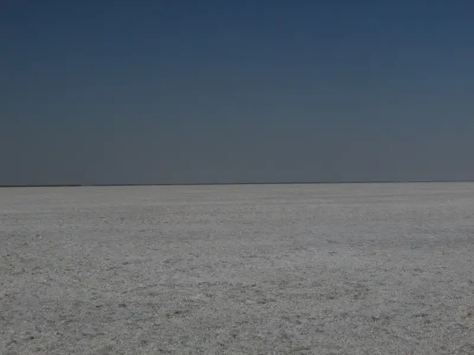
Trip guide · Best: Nov–Feb, and full-moon nights
Rann Utsav 2026–27: dates, booking and a Rann of Kutch trip plan
Rann Utsav 2026–27 runs from 1 November 2026 to 7 March 2027 at the Dhordo tent city. Official dates, full-moon nights, tents and how to book on the official site, the White Rann permit, IMD weather in December, a 2–3 day Kutch plan, getting to Bhuj, and what to wear.
Plan your tripTrip guide · Best: April and May for spring flowers, and late September to November for autumn colours; December to February is cold, with snow in the mountains
South Korea trip from India: the Korea visa for Indians, flights to Seoul, a 7-day plan and the best time to go
Plan a South Korea trip from India: the Korean tourist visa for Indians (₹3,600 visa fee plus the VFS charge, documents, 15 to 25 working days), visa-free Jeju for 30 days, the transit rule with a US visa, the e-Arrival Card, flights to Seoul, a 7-day Seoul, Busan and Gyeongju plan, the weather by month and veg food tips.
Plan your trip
Trip guide · Best: April to June and September to October for New York and California; Orlando and Las Vegas are pleasant from November to March; New York is freezing in January
USA trip from India: the B1/B2 visitor visa, direct flights, a 10-day plan and the best time to go
Plan a USA trip from India: the US tourist visa (B1/B2) for Indians, the US$185 fee, the DS-160 and the interview, how to check the appointment waiting time, why Indians can't use ESTA, direct flights from Delhi and Mumbai to New York and San Francisco, a 10-day New York, Las Vegas, Los Angeles and San Francisco plan, the weather by month, and food rules at US customs.
Plan your trip
Trip guide · Best: September to November and March to May for mild weather in Sydney and Melbourne; December to February is summer, hot and busy
Australia trip from India: the visitor visa, direct flights, a 10-day plan and the best time to go
Plan an Australia trip from India: the Visitor visa (subclass 600) for Indians, from AUD 250, why Indians can't use the ETA or eVisitor, direct flights from Delhi and Bengaluru to Sydney and Melbourne, a 10-day Sydney, Blue Mountains, Melbourne and Great Ocean Road plan, the weather by month, Opal and myki, and food rules at the airport.
Plan your trip
Trip guide · Best: April to June and September to October for mild weather; July and August are hot, and December to February is cool and windy in Baku
Azerbaijan trip from India: the e-visa, a 5-day Baku plan and Baku in December
Plan an Azerbaijan trip from India: the Azerbaijan e-visa for Indians (30 days' stay, standard in 3 working days or urgent in 3 hours), registration if you stay over 15 days, flights from India to Baku, a 5-day Baku, Gobustan and Absheron plan, Baku's weather in December, combining Baku with Georgia, and veg food tips.
Plan your tripTrip guide · Best: April to October is drier; December to February is the wettest
Bali trip from India: visa, a 6-day itinerary, honeymoon tips and the weather
Plan a Bali trip from India: the visa on arrival for Indians (Rp 500,000 for 30 days, also online as an e-VOA), the All Indonesia arrival card, the Rp 150,000 Bali tourist levy, direct flights from Delhi and Bengaluru, a 5 or 6-day plan for Ubud, Seminyak, Uluwatu and Nusa Penida, honeymoon tips, the weather in December, veg food and getting around.
Plan your trip
Trip guide
Best time to visit India, and first-trip routes: the Golden Triangle, Rajasthan, Kerala and Goa
When to visit India by region and month (winter, summer and the monsoon, with IMD dates), a 5-day and 7-day Golden Triangle itinerary for Delhi, Agra and Jaipur, the Taj Mahal's hours and Friday closing, and how to add Rajasthan, Varanasi, Kerala or Goa.
Plan your trip
Trip guide · Best: Oct–Dec for clear skies; avoid the June–September monsoon
Bhutan by road from India: the Phuentsholing permit, the route and driving your own car
How to go to Bhutan by road from India: reach Bagdogra, NJP or Hasimara, cross at Jaigaon and Phuentsholing, get the entry permit with a passport or voter ID, pay the SDF, book a guide, and the Nu 4,500 a day rule for your own car. Official rules, checked 21 Nov 2026.
Plan your trip
Trip guide · Best: November to March is warm, not hot; May to September is very hot
Dubai trip from India: visa, a 5-day plan with an Abu Dhabi day trip, and the weather in December
Plan a Dubai trip from India: how Indians get a UAE tourist visa (AED 200 for 30 days through a tourism company), the visa on arrival for Indians with a US, UK or EU visa or residence, direct flights from Indian cities, a 5-day plan with an Abu Dhabi day trip, the weather in December, the metro and nol card, food, VAT refunds and emergency numbers.
Plan your trip
Trip guide · Best: May, June and September for mild weather; December for Christmas markets and snow in the Alps
Europe trip from India: the Schengen visa, a 10-day Switzerland, Paris and Italy plan, and the best time to go
Plan your first Europe trip from India: the Schengen visa for Indians (which country to apply to, documents, travel insurance, the €90 fee and the 15-day processing time), the multi-year visa rule for Indians, direct flights from Indian cities to Zurich, Paris, Milan and Rome, a 10-day Switzerland, France and Italy itinerary, the Swiss Travel Pass, the weather by month and veg food tips.
Plan your trip
Trip guide · Best: May to October for sightseeing and Kazbegi; late December to March for snow and skiing in Gudauri
Georgia trip from India: the e-visa, a 6-day plan and Georgia in December
Plan a Georgia trip from India: the Georgian e-visa for Indians (US$20 plus a 2% service fee and a US$15 DuVerify step), visa-free entry for 90 days in 180 with a valid US, UK, EU or Schengen visa or residence permit, flights from India, a 6-day Tbilisi, Kazbegi and Kakheti plan, Gudauri skiing and Georgia in December, and veg food tips.
Plan your trip
Trip guide · Best: October to December is dry, sunny and cooler; June to September is hot, wet and the typhoon season
Hong Kong trip from India: pre-arrival registration, a 4-day plan with Disneyland and the weather in December
Plan a Hong Kong trip from India: the free pre-arrival registration (PAR) that lets Indians visit for up to 14 days without a visa, direct flights from Delhi, Mumbai, Bengaluru, Chennai and Hyderabad, a 4-day itinerary with Disneyland, Ocean Park and Macau, the weather in December, the Octopus card, and veg food tips.
Plan your tripTrip guide
India e-Visa for tourists: the official website, cost, how early to apply and the photo
How to get India's e-Tourist Visa: the only official website, the 30-day, 1-year and 5-year visas, the fee table for US, UK, Canadian, Australian and EU citizens, when to apply, photo rules, entry airports and the e-Arrival card.
Plan your trip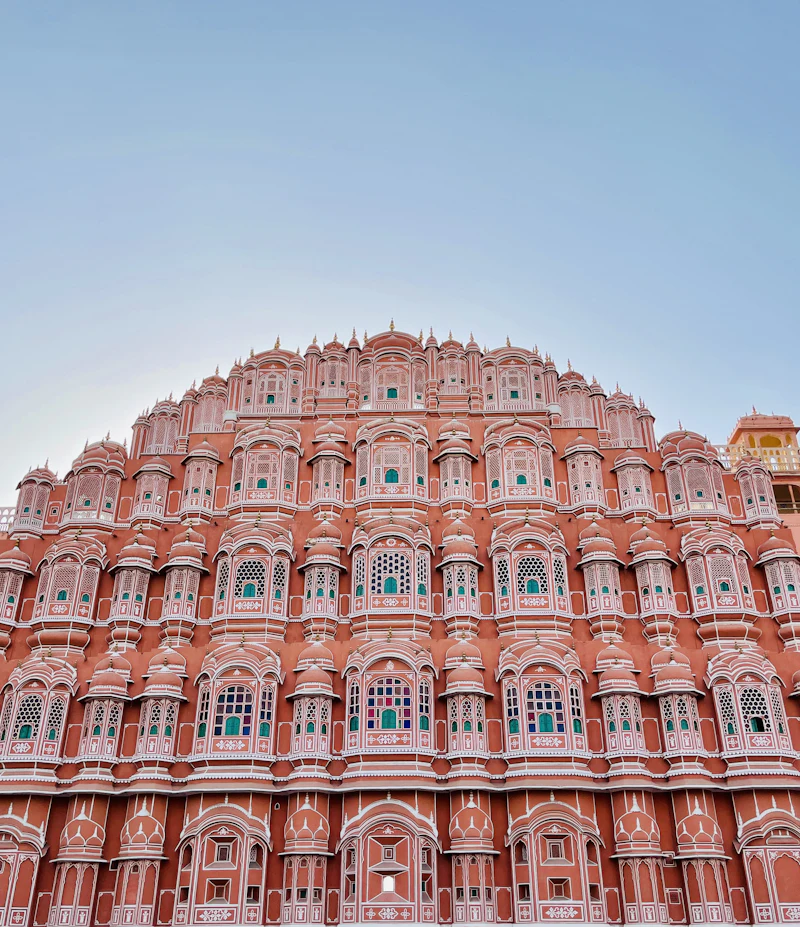
Trip guide
SIM card, UPI and money in India for tourists: what foreign visitors need
Getting a local SIM in India as a foreigner (passport, visa, live photo), eSIM options, whether tourists can use UPI (UPI One World), how much cash you can bring in, and when to declare it.
Plan your tripTrip guide · Best: Late March to May for cherry blossom and spring; October and November for autumn colours; December to February is cold but mostly dry in Tokyo
Japan trip from India: visa, a 7-day plan, December weather and cherry blossom
Plan a Japan trip from India: the Japan eVISA for Indians through VFS (₹500 visa fee from 1 July 2026, plus the VFS fee), direct flights from Delhi, Mumbai and Bengaluru to Tokyo, a 7-day Tokyo, Kyoto and Osaka itinerary, the Japan Rail Pass, the weather in December, cherry blossom dates, and veg food tips.
Plan your trip
Trip guide · Best: June to September for lakes and hikes; December to March for snow near Almaty
Kazakhstan trip from India: the visa-free rule, a 5-day Almaty plan and Almaty in winter
Plan a Kazakhstan trip from India: no visa for Indians for up to 14 days at a time (42 days in 180), direct flights from Delhi and Mumbai to Almaty, a 5-day Almaty itinerary with Shymbulak, Kok Tobe and Charyn Canyon, Almaty weather in winter, getting around, and veg food tips.
Plan your trip
Trip guide · Best: December to February for Langkawi and Penang; avoid the east coast islands from November to January
Malaysia trip from India: visa-free entry, the MDAC, a 5-day plan and the weather in December
Plan a Malaysia trip from India: visa-free stays of up to 30 days for Indians until 31 December 2026, the free MDAC arrival card, direct flights from Indian cities, a 5-day plan for Kuala Lumpur, Genting and Langkawi or Penang, the weather in December, a Singapore + Malaysia combo, getting around and Indian food.
Plan your trip
Trip guide · Best: January to April is driest around Malé; May to November is wetter
Maldives trip from India: visa, resort or local island, a 5-day plan and honeymoon tips
Plan a Maldives trip from India: the free visa on arrival and what Maldives Immigration asks for, the IMUGA traveller declaration, direct flights from Indian cities, resort vs local-island stays, speedboat and seaplane transfers, the green tax (US$12 or US$6 a night), a 5-day plan, honeymoon tips, the weather in December, veg food and rules on alcohol and idols.
Plan your tripTrip guide · Best: May to November is drier and less humid; December to April is hot, with more rain and the cyclone season
Mauritius trip from India: visa, a 5-day plan, honeymoon tips and the weather in December
Plan a Mauritius trip from India: no visa needed for Indians (Mauritius Passport and Immigration Office) and what you must show on arrival, the free All-in-One Travel Digital Form, direct flights from Delhi, Mumbai, Chennai and Bengaluru, a 5-day itinerary with Grand Bassin, Chamarel, Le Morne and Île aux Cerfs, honeymoon tips, the weather in December from Mauritius Meteorological Services, and veg food.
Plan your trip
Trip guide · Best: February to April is driest; November to January is the wettest
Singapore trip from India: visa, a 5-day itinerary and the weather in December
Plan a Singapore trip from India: the visa for Indians (₹2,100 fee plus up to ₹1,300 agent fee, 3 to 5 working days), the SG Arrival Card, direct flights from Indian cities, a 4 or 5-day itinerary, the weather in December, Christmas events, the MRT, GST refunds and emergency numbers.
Plan your trip
Trip guide · Best: January to March for the west and south coasts and the hills; May to September for the east coast
Sri Lanka trip from India: free ETA, a 6-day itinerary and the Ramayana trail
Plan a Sri Lanka trip from India: the free ETA for Indians (30 days, apply online before you fly), direct flights from Indian cities, a 6-day itinerary with Colombo, Sigiriya, Kandy, Nuwara Eliya and Ella or Galle, the Ramayana sites, the weather in December and January, trains, food and emergency numbers.
Plan your trip
Trip guide · Best: November to February is cooler and mostly dry; May to October is the rainy season
Thailand trip from India: visa, a 5 to 7-day plan and the weather in December
Plan a Thailand trip from India: the 30-day visa exemption for Indians (from 15 Sep 2026), the free TDAC arrival card, direct flights from Indian cities to Bangkok, Phuket and Krabi, a 5 to 7-day itinerary, the weather in December, getting around, and veg and Jain food tips.
Plan your trip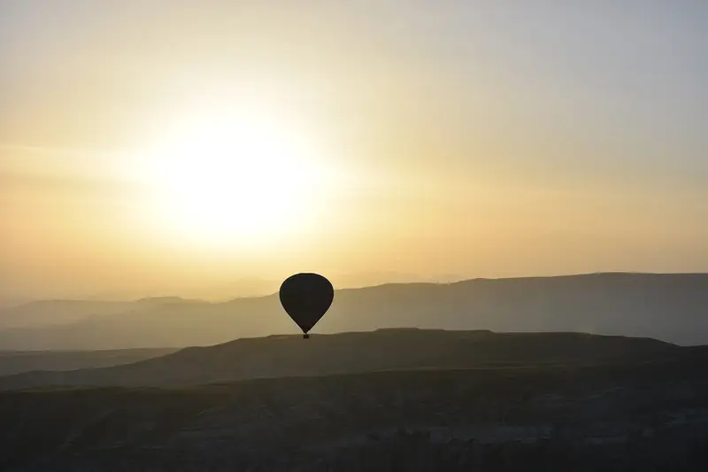
Trip guide · Best: April to June and September to October for sightseeing; Istanbul is cool and rainy from November to February, and Cappadocia goes below freezing at night
Turkey trip from India: the visa, direct flights, a 7-day plan and Cappadocia
Plan a Turkey (Türkiye) trip from India: the visa for Indians, the one-month e-visa for Indians with a valid US, UK, Schengen or Irish visa or residence permit, direct flights from Delhi and Mumbai to Istanbul, a 7-day Istanbul and Cappadocia plan, hot air balloons, the weather in December, and veg food tips.
Plan your trip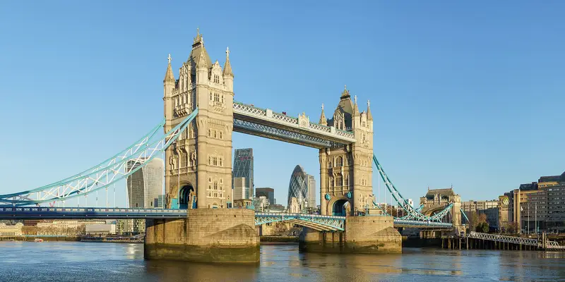
Trip guide · Best: May to September for long days and the mildest weather; December is cold and dark early, with Christmas lights
UK trip from India: London, the Standard Visitor visa, direct flights and a 7-day plan
Plan a UK trip from India, with London at the centre: the Standard Visitor visa for Indians (£135 for up to 6 months, decision usually within 3 weeks), what you need to apply, why Indians can't use the UK ETA, direct flights from Delhi, Mumbai, Bengaluru, Hyderabad, Chennai, Ahmedabad and Amritsar, a 7-day London, Oxford and Edinburgh plan, the weather by month, and paying for the Tube with contactless.
Plan your trip
Trip guide · Best: March to May for the whole country; December to April for the south; February to August for Hoi An
Vietnam trip from India: e-visa, a 7-day itinerary and the weather in December
Plan a Vietnam trip from India: the e-visa for Indians (US$25 single entry, up to 90 days), the pre-arrival form, direct flights from Indian cities to Hanoi and Ho Chi Minh City, a 5 or 7-day itinerary with Ha Long Bay and Hoi An, the weather in December by region, getting around, and veg and Jain food tips.
Plan your tripTrip guide · Best: Oct–Mar
Visiting India for the first time: start here
First trip to India? The e-Visa from the only official site, the e-Arrival card, customs for foreign tourists, what to pack and wear, SIM cards and UPI, cash rules, the best time to go and a first route, all from official sources.
Plan your tripTrip guide
Republic Day parade tickets 2027: how to book, price and what you can't take
How to book Republic Day 2027 parade and Beating Retreat tickets on the Defence Ministry's Aamantran site or at Delhi counters, last year's prices and dates, the ID you need and what isn't allowed.
Plan your trip
Trip guide · Best: Oct–Mar; rafting Sep–Jun
Rishikesh in December and January: weather, rafting and what to wear
Plan Rishikesh for December or January: IMD temperatures, whether rafting is open, licensed camps, Ganga aarti times, which bridges are open, the Haridwar Kumbh from 14 January, getting there and what to wear.
Plan your tripTrip guide · Best: Sep–Mar
Udaipur in winter: a 2–3 day trip plan for December and January
Plan Udaipur for December or January: IMD temperatures, a 2-day and 3-day plan, City Palace and Lake Pichola boat times, the Shilpgram Utsav, day trips to Kumbhalgarh and Ranakpur, getting there and what to wear.
Plan your tripTrip guide · Best: 23–26 Jan 2027
Republic Day long weekend 2027: where to go, and how to see the parade
Republic Day 2027 parade tickets: how they were sold in 2026, and 4-day trips for the 26 January 2027 long weekend (Jaipur, Manali, Goa, Kerala).
Plan your tripTrip guide · Best: Oct–Mar
Jaipur in winter: a simple trip guide for Christmas and New Year
Plan Jaipur for December and January: cold mornings, monument hours and the composite ticket, getting there from Delhi and Agra, the metro, markets and January festivals.
Plan your trip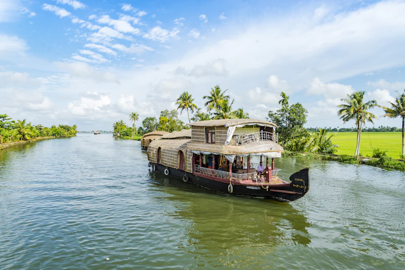
Trip guide · Best: Nov–Feb
Kerala in winter: Kochi, Munnar and the backwaters at Christmas and New Year
Plan Kerala for December and January: the weather, airports, the Cochin Carnival in Fort Kochi, houseboats in Alappuzha, Eravikulam in Munnar, beach safety and the 1 January dry day.
Plan your trip
Trip guide · Best: Dec–Feb for snow
Manali in winter: snow, roads and a New Year trip guide
Plan Manali for December and January: when snow usually comes, getting there from Delhi and Chandigarh, Rohtang and the Atal Tunnel in winter, green tax, snow driving and what to pack.
Plan your tripNew picks every day on Telegram and WhatsApp
Hand-picked bags, luggage, watches and travel essentials on sale, plus quick buying tips. No spam.